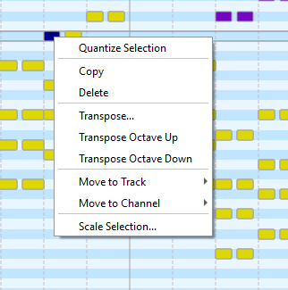
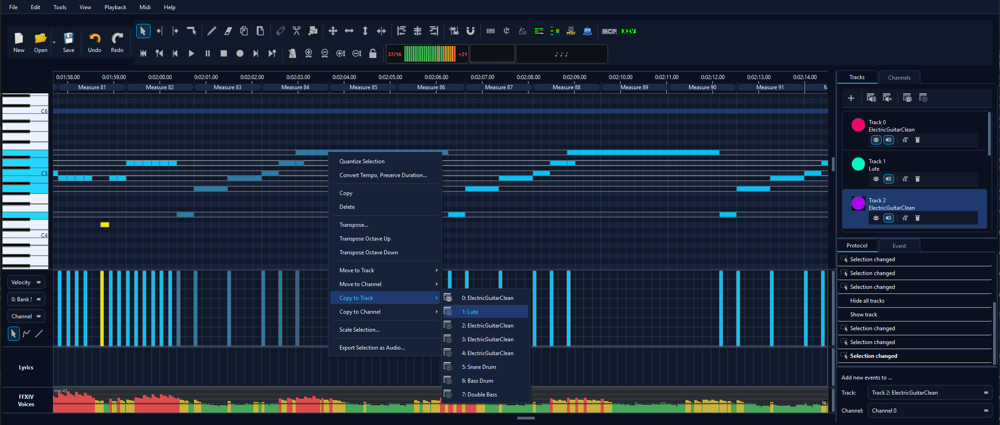
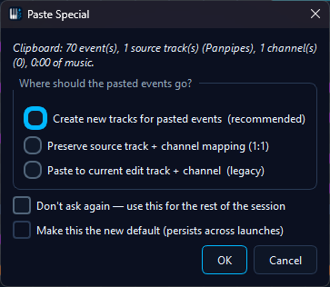

Editing Midi files
Selecting Events
In order to edit Midi events, the events which will be edited have to be selected. There are many different ways how to select events. Events can be selected using the standard tool or using one of the tools listed below.
When pressing SHIFT while selecting events, the old selection will be extended with the newly selected events. In order to remove events from a selection, the events can be accessed as if you wanted to select them while pressing CTRL.
 |
Select single Events Click on an event in the view to select it. |
 |
Select Events (Box) If you want to select more events at the same time you can use the "Select Box" Tool. Click at any point in the event view and drag the appearing box. All events in the box will be selected. |
 |
Select all Events on the left side Select the tool and click at the wished horizontal position. All events before the clicked position will be selected. |
 |
Select all Events on the left side Select the tool and click at the wished horizontal position. All events after the clicked position will be selected. |
When pressing CTRL+A, all visible events will be selected. Moreover, events from a specific track or from a specific channel can be selected using the according actions in the edit menu in the menubar.
Once an event has been selected, you can navigate the selection to nearby events using the arrow keys on the keyboard.
Moving events
Moving events will either change their start- and endtimes (horizontal movement) or the note height of note events (moving notes up and down). While the standard tool can select and move events at the same time, selected events can either be moved with one of the tools listed below, or by accessing the according values of the events in the event editor.
 |
Move Events (all directions) Click inside the event view and drag the mouse in order to move all selected events. |
 |
Move Events (Left and Right) Click inside the event view and drag the mouse in order to move all selected events horizontal. |
 |
Move Events (Up and Down) Click inside the event view and drag the mouse in order to move all selected events vertical. This tool only works with note events. |
Moreover, the timing of the events can be corrected by quantifying them.
Changing the duration of events

Resizing note events changes the start or the end time of the event - this means the duration of the note. All other events can not be resized. The duration of a note can either be directly set using the event editor or by selecting the resizing tool (shown on the left). To use the tool, select the events to resize and move the mouse over the start or the end of a selected event. Drag the mouse in order to resize the event. The standard tool can also resize events.
Creating and deleting events

Creating events can be done with the standard tool or with the new events tool (shown on the left). Clicking inside the event view and dragging the mouse will create the events. New events will be assigned to the track and the channel which are defined in the lower right corner of the editor.

In order to remove events, you can press the DEL key which will delete all selected events. Moreover, events from a specific channel can be removed by clicking the according action in the tools menu. The remove events tool can remove specific events.
Standard Tool

This tool is the most often used tool in MidiEditor. It provides a mixture of all selectable tools above. Events can be selected by clicking on them or by dragging a box around the events to select. In order to add an event to an already existing selection, hold the SHIFT key while selecting new events in the above explained manner. In order to remove individual events, hold CTRL and click on the events to deselect. Events can be moved up and down as well as left and right by clicking inside the event and dragging the mouse. Clicking at the left or right border of an event and dragging the mouse afterwards will change the duration and the starting time of the event. All actions will be applied to all selected events. Ctrl+Right-Click creates new notes; a plain Right-Click on selected events opens the context menu.
Right-Click Context Menu
Right-clicking on one or more selected events opens a context menu with quick access to the most common editing operations - no need to dig through the menubar or remember keyboard shortcuts.
{kind=link}

Right-click on selected events to access quick editing actions.
The context menu includes:
- Quantize - snap selected events to the current grid
- Copy / Paste - clipboard operations on the selection
- Delete - remove selected events
- Transpose… - shift notes up or down by semitones or octaves
- Move to Track… - reassign selected events to a different track
- Move to Channel… - reassign selected events to a different MIDI channel
- Copy to Track… / Copy to Channel… - duplicate the selection onto another track / channel (see below)
- Scale Velocity… - adjust note velocities by percentage
- Legato - extend notes to fill gaps between consecutive notes
Note: Plain right-click opens the menu. To create a new note with the standard tool, hold Ctrl while right-clicking.
Copy to Track / Copy to Channel
In addition to the existing Move to Track / Move to Channel entries, the matrix right-click menu and the Tools menu now expose Copy events to track… and Copy events to channel…. Both duplicate the current selection 1:1 onto the chosen target while leaving the originals exactly where they were - nothing is shifted, scaled, or quantised.
- Selection switches to the copies. After the action, the new duplicates become the active selection so an immediate Octave Up, velocity edit, or recolour only affects the copies. The originals stay where they are, deselected.
- NoteOn / Off pairing is preserved. Each duplicated NoteOn gets a duplicated paired OffEvent on the same target track / channel at the same off-tick - no orphan note ever appears in the file.
- Single undo step. The whole duplication runs inside one
Protocol::startNewAction("Copy to Track ...")block - one Ctrl+Z restores the file byte-identically. - Cross-track selections collapse to a single target. A selection that spans tracks 1 and 2, copied to track 3, lands all duplicates on track 3 on the channels they had originally (matches the existing Move to Track behaviour).
- Meta channels are skipped. Channels 16 (lyrics/text), 17 (tempo) and 18 (time signature) do not appear in the Copy to Channel submenu - "channel" doesn't apply to those event types.
Typical workflow: select a melody line, Copy to Track to a fresh track, then transpose the duplicate by an octave for a doubled lead - the original lead stays untouched. For ensemble work, copy a single channel to channels 1-3 and pan / re-instrument each copy for instant layering.
{kind=link}

Copy to Track / Copy to Channel sit next to the existing Move-to entries.
Magnet and Raster

When the magnet (shown on the left) is enabled, all dragging or shifting operations inside the event view will result in a timing which is aligned to the specified raster. That means that events will start at the correct time when the start time is close to the time which is represented by a vertical line in the event view. The raster size can be controlled from within the view menu in the menubar. It can be set to any known note length (eights, quarters etc.).
Quantization

While an event can start and end at any time, it is often required to make the timing "correct" which means, that the event starts at an exact position within the measure and have a duration which is equal to a known note duration (quarter, 8th, ...). This exact timing can be achieved by quantifying the events. Pressing the quantify button (shown on the left) will align all selected events to a grid. The size of this grid, the quantization fractions, can be controlled from within the tools menu in the menubar.
The following picture shows some notes before (left) and after (right) quantization. The quantization fractions were set to 8ths.

As tuplets are not aligned on the usual grid, you can select the events which belong to a tuplet und use the action quantify tuplet in order to correct a tuplet's timing.
Copying/Pasting Events
In order to copy events, select the events to copy and press CTRL+C. This will copy the events to the clipboard. Set the cursor at the time where you want the copied events to start and press CRTL+V which will paste the events at the wished position.
The clipboard works both within the same MidiEditor window and across two windows. Copy a selection in one instance, switch to another instance (or another file in the same instance) and paste - the events arrive at the cursor position. The two flows behave slightly differently:
- Same-file paste - events are pasted onto the current edit track / channel (or whatever Paste options dictates). This is the classic Ctrl+C / Ctrl+V loop.
- Cross-instance paste - the source file's track names and channel layout travel with the clipboard, so MidiEditor can offer to recreate that structure in the target file via the new Paste Special… dialog.
Paste Special (Cross-Instance Paste)
When the clipboard contains events copied from another MidiEditor instance (or from a different file in the same instance), pressing Ctrl+V opens the Paste Special… dialog instead of collapsing everything onto the current edit track. You can also reach it any time via Edit → Paste Special….
The dialog header shows a one-line summary - “Clipboard: N event(s), M source track(s), C channel(s), D of music” - followed by three target-assignment modes:
- Create new tracks per source (default) - every distinct source track becomes a
fresh track in the current file, named
Pasted: <original name>. Channels are preserved 1:1. Best when you are merging arrangements and want each contributor on its own track. - Preserve source track + channel mapping (1:1) - reuses target tracks whose names match the source, otherwise creates them with the original name. Channels are kept as-is. Best when both files already share a track structure and you just want events to land where they came from.
- Paste to current edit track + channel (legacy) - the pre-1.6 behaviour. All events collapse onto the current edit track and edit channel. Useful for quick one-off paste of a single phrase.
Two checkboxes at the bottom control how often the dialog appears:
- Don’t ask again this session - subsequent Ctrl+V presses silently reuse the chosen mode until MidiEditor is closed.
- Make this the new default - persists the chosen mode across restarts (only enabled when the “don’t ask” box is also ticked).
Single undo step. Track creation and event insertion happen in the same protocol action, so one Ctrl+Z rewinds both the pasted events and any freshly-created tracks. The original same-file Ctrl+C / Ctrl+V fast-path is unchanged.
{kind=link}

Paste Special opens automatically when the clipboard came from another MidiEditor instance.
Editing Tempo and Meter
Tempo and meter can be changed using the according tools. Tempo can also be changed using the control editor below the event view.
 |
Edit Tempo After selecting the tool, click inside the event view at the position were you want to change the tempo. A dialog will pop up letting you enter the new tempo. You can also select a time period by letting the mouse pressed after clicking and moving the mouse to the end of the time period. This allows you to gradually increase or decrease the tempo. |
 |
Edit time signatures This tool allows you to select a measure and set the according time signature (meter). |
Add or remove measures
 |
Add or remove measures Either click on the line between two measures to add measures, or select a single or multiple measures and press the DELETE key on your keyboard to remove the measures. |
Editing Controls and Velocities
Below the event view there is a window which allows you to edit and visualize the control change events, the velocity of the notes, and other parameters.

Editing can be done with three different modes:
 |
Single mode The curve's points can be selected and dragged. New points can be created by clicking areas with no points. |
 |
Free-hand mode A freehand curve can be entered by moving the mouse while pressing the left button. |
 |
Line mode A line can be dragged with the mouse. |
Tracks and Channels
Each Midi file seperates its events in one or more tracks. Each track can contain multiple channels.
Each track has a name. This name describes the tracks content. To change
it you can press the button  in the track editor.
A dialog will open up to enter the tracks new name.
in the track editor.
A dialog will open up to enter the tracks new name.
To create a new track you can press the button  in the track editor.
To remove a whole track you can press
in the track editor.
To remove a whole track you can press  . This will
delete all events of the selected track and the track itself.
If there is only one track left, this track can not be deleted.
. This will
delete all events of the selected track and the track itself.
If there is only one track left, this track can not be deleted.
Channel 0 - 15 are the instrument channels. They contain information
about the notes to play and the instruments sound. The sound of
the instrument can be chosen from a list of instruments. Press
 in the channel list to change the instrument. This will open up the following dialog:
in the channel list to change the instrument. This will open up the following dialog:

You can specify the instrument from the given list. Accepting the dialog will set the channel's instrument in the beginning of the file to the instrument from the list. Later in the file there may be Program Change Events changing the channel's instrument. To prevent this, you can select "Remove other Program Change Events" before accepting the dialog. All other Program Change Events of the channel will be removed.
Tweaking Event Properties
You can finely tweak the properties of selected events using the keyboard. First choose which property to tweak:
- Time, preserving duration = 1
- Start time = 2
- End time = 3
- Note = 4
- Note velocity, controller value, or tempo = 5
Then choose how you'd like that property of the respective selected events to be modified:
- Small decrease = 9
- Small increase = 0
- Medium decrease = Alt + 9
- Medium increase = Alt + 0
- Large decrease = Alt + Shift + 9
- Large increase = Alt + Shift + 0